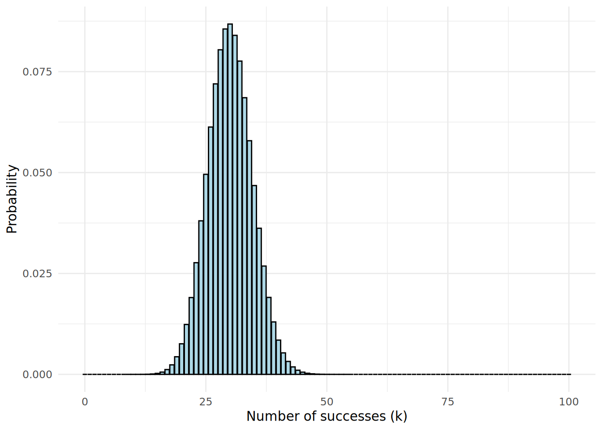
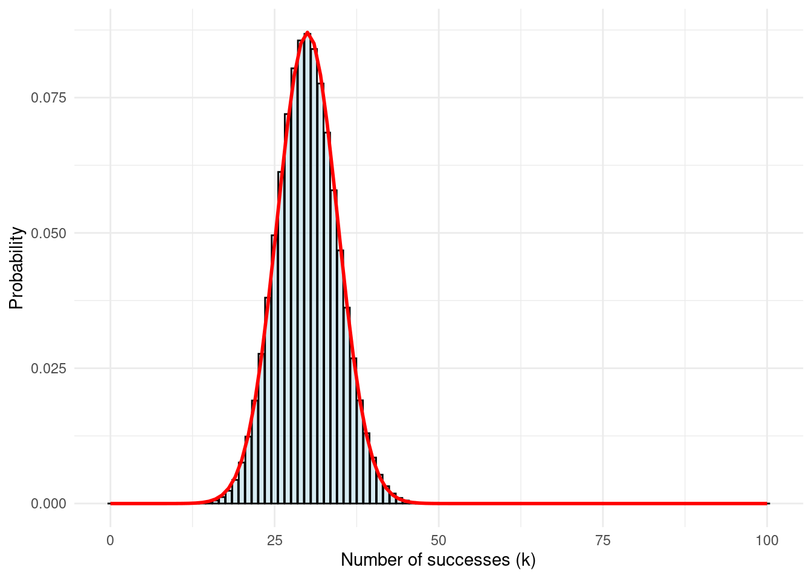
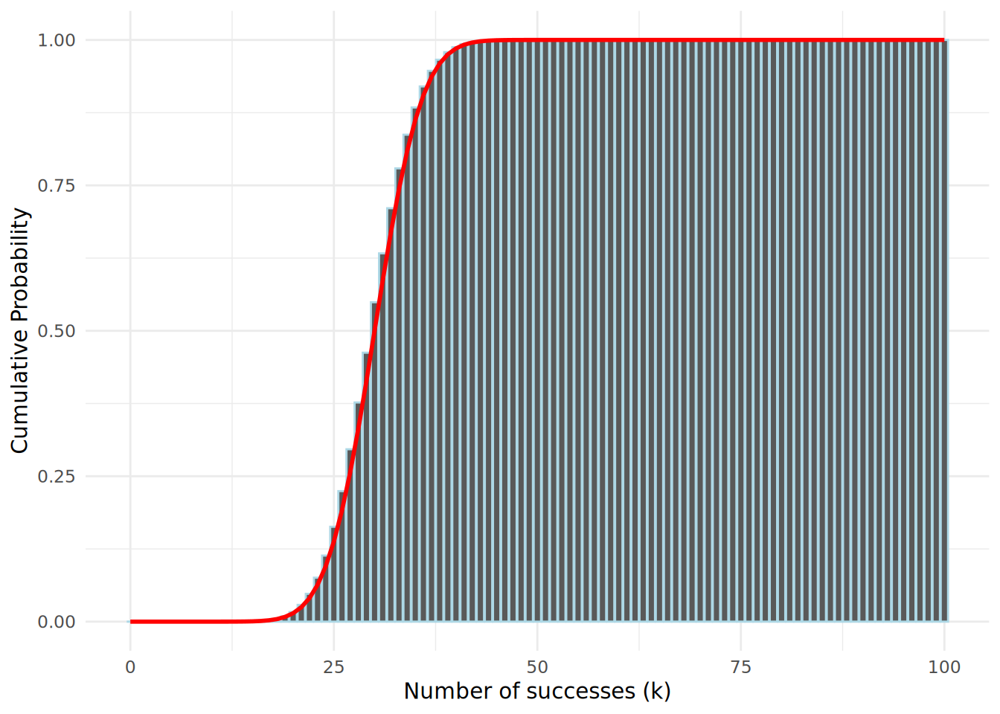
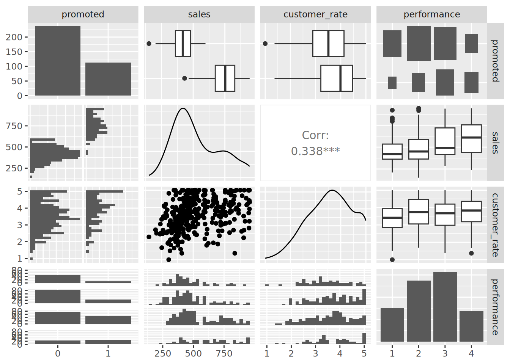
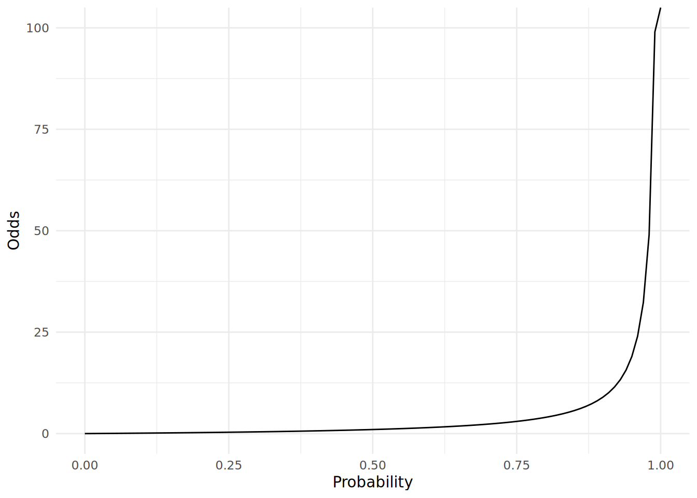
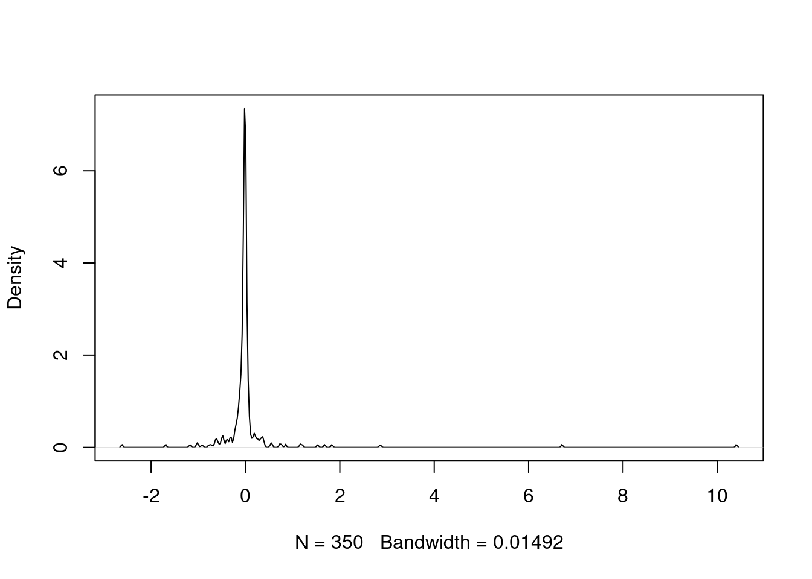

5 Binomial Logistic Regression for Binary Outcomes
In the previous chapter we looked at how to explain outcomes that have continuous scale, such as quantity, money, height or weight. While there are a number of typical outcomes of this type in the people analytics domain, they are not the most common form of outcomes that are typically modeled. Much more common are situations where the outcome of interest takes the form of a limited set of classes. Binary (two class) problems are very common. Hiring, promotion and attrition are often modeled as binary outcomes: for example ‘Promoted’ or ‘Not promoted’. Multi-class outcomes like performance ratings on an ordinal scale, or survey responses on a Likert scale are often converted to binary outcomes by dividing the ratings into two groups, for example ‘High’ and ‘Not High’.
In any situation where our outcome is binary, we are effectively working with likelihoods. These are not generally linear in nature, and so we no longer have the comfort of our inputs being directly linearly related to our outcome. Therefore direct linear regression methods such as Ordinary Least Squares regression are not well suited to outcomes of this type. Instead, linear relationships can be inferred on transformations of the outcome variable, which gives us a path to building interpretable models. Hence, binomial logistic regression is said to be in a class of generalized linear models or GLMs. Understanding logistic regression and using it reliably in practice is not straightforward, but it is an invaluable skill to have in the people analytics domain. The mathematics of this chapter is a little more involved but worth the time investment in order to build a competent understanding of how to interpret these types of models.
5.1 When to use it
5.1.1 Origins and intuition of binomial logistic regression
Imagine that we have a set of observations of a random variable that is binary or dichotomous in nature. For convenience, let’s call the two values that any observation can take ‘success’ and ‘failure’. Let’s say that the probability of an observation being a success is \(p\), and therefore the probability of an observation being a failure is \(1 - p\). Such a random variable is known as a Bernoulli random variable.
Let’s also imagine we take a sample of \(n\) observations of a Bernoulli random variable. Then the number of successes in the sample, which we will call \(Y\), will follow a binomial distribution with parameters \(n\) and \(p\). The probability of observing exactly \(k\) successes in our sample is given by the formula:
\[ P(Y = k) = \binom{n}{k} p^k (1 - p)^{n - k} \]
where \(\binom{n}{k} = \frac{n!}{k!(n-k)!}\) is the binomial coefficient, which gives the number of ways of choosing a subset of size \(k\) from a total of \(n\) observations. Here is the distribution of \(Y\) for \(n = 100\) and \(p = 0.3\), shown in Figure 5.1:
Now, although the variable \(Y\) here is discrete (can only take non-negative integer values), we can see that the shape of \(Y\) resembles a normal distribution. In fact, as long as \(n\) is not very small and \(p\) is not very biased1, the binomial distribution can be well approximated by a normal distribution with mean \(np\) and variance \(np(1 - p)\) (standard deviation \(\sqrt{np(1-p)}\)) as shown in Figure 5.2 for \(n = 100\) and \(p = 0.3\).

Now if we consider tha cumulative probability of \(Y\), that is, the probability of observing up to and including \(k\) successes, we can see that this cumulative probability takes on an S-shape, which is also well approximated by the cumulative normal distribution, as shown in Figure 5.3 for \(n = 100\) and \(p = 0.3\).

We will be interested in modeling this cumulative probability of success, in order to understand how various input variables might influence it. Because we know that it is well approximated by the normal distribution, we can utilize a function that has very similar characteristics to the normal distribution, but is easier to work with mathematically.
The logistic function was first introduced by the Belgian mathematician Pierre François Verhulst in the early 1800s as a tool for modeling population growth for humans, animals and certain species of plants and fruits. By this time, it was generally accepted that population growth could not continue exponentially forever, and that there were environmental and resource limits which place a maximum limit on the size of a population. The formula for Verhulst’s function was:
\[ y = \frac{L}{1 + e^{-k(x - x_0)}} \] where \(e\) is the exponential constant, \(x_0\) is the value of \(x\) at the midpoint, \(L\) is the maximum value of \(y\) (known as the ‘carrying capacity’) and \(k\) is the maximum gradient of the curve.
The logistic function, as shown in Figure 5.4, was felt to accurately capture the theorized stages of population growth, with slower growth in the initial stage, moving to exponential growth during the intermediate stage and then to slower growth as the population approaches its carrying capacity.

In the early 20th century, starting with applications in economics and in chemistry, the logistic function was adopted in a wide array of fields as a useful tool for modeling phenomena. In statistics, it was observed that the logistic function has a similar S-shape (or sigmoid) to a cumulative normal distribution of probability, as depicted in Figure 5.52, where the \(x\) scale for the normal distribution represents standard deviations around the mean. As we will learn, the logistic function gives rise to a mathematical model where the coefficients are easily interpreted in terms of likelihood of the outcome. Unsurprisingly, therefore, the logistic model soon became a common approach to modeling probabilistic phenomena.

5.1.2 Use cases for binomial logistic regression
Binomial logistic regression can be used when the outcome of interest is binary or dichotomous in nature. That is, it takes one of two values. For example, one or zero, true or false, yes or no. These classes are commonly described as ‘positive’ and ‘negative’ classes. There is an underlying assumption that the cumulative probability of the outcome takes a shape similar to a cumulative normal distribution.
Here are some example questions that could be approached using binomial logistic regression:
- Given a set of data about sales managers in an organization, including performance against targets, team size, tenure in the organization and other factors, what influence do these factors have on the likelihood of the individual receiving a high performance rating?
- Given a set of demographic, income and location data, what influence does each have on the likelihood of an individual voting in an election?
- Given a set of statistics about the in-game activity of soccer players, what relationship does each statistic have with the likelihood of a player scoring a goal?
5.1.3 Walkthrough example
You are an analyst for a large company consisting of regional sales teams across the country. Twice every year, this company promotes some of its salespeople. Promotion is at the discretion of the head of each regional sales team, taking into consideration financial performance, customer satisfaction ratings, recent performance ratings and personal judgment.
You are asked by the management of the company to conduct an analysis to determine how the factors of financial performance, customer ratings and performance ratings influence the likelihood of a given salesperson being promoted. You are provided with a data set containing data for the last three years of salespeople considered for promotion. The salespeople data set contains the following fields:
promoted: A binary value indicating 1 if the individual was promoted and 0 if notsales: the sales (in thousands of dollars) attributed to the individual in the period of the promotioncustomer_rate: the average satisfaction rating from a survey of the individual’s customers during the promotion periodperformance: the most recent performance rating prior to promotion, from 1 (lowest) to 4 (highest)
Let’s take a quick look at the data.
# if needed, download salespeople data
url <- "https://peopleanalytics-regression-book.org/data/salespeople.csv"
salespeople <- read.csv(url)# look at the first few rows of data
head(salespeople) promoted sales customer_rate performance
1 0 594 3.94 2
2 0 446 4.06 3
3 1 674 3.83 4
4 0 525 3.62 2
5 1 657 4.40 3
6 1 918 4.54 2The data looks as expected. Let’s get a summary of the data.
summary(salespeople) promoted sales customer_rate performance
Min. :0.0000 Min. :151.0 Min. :1.000 Min. :1.0
1st Qu.:0.0000 1st Qu.:389.2 1st Qu.:3.000 1st Qu.:2.0
Median :0.0000 Median :475.0 Median :3.620 Median :3.0
Mean :0.3219 Mean :527.0 Mean :3.608 Mean :2.5
3rd Qu.:1.0000 3rd Qu.:667.2 3rd Qu.:4.290 3rd Qu.:3.0
Max. :1.0000 Max. :945.0 Max. :5.000 Max. :4.0
NA's :1 NA's :1 NA's :1 First we see a small number of missing values, and we should remove those observations. We see that about a third of individuals were promoted, that sales ranged from $151k to $945k, that as expected the average satisfaction ratings range from 1 to 5, and finally we see four performance ratings, although the performance categories are numeric when they should be an ordered factor, and promoted is numeric when it should be categorical. Let’s convert these, and then let’s do a pairplot to get a quick view on some possible underlying relationships, as in Figure 5.6.
library(GGally)
# remove NAs
salespeople <- salespeople[complete.cases(salespeople), ]
# convert performance to ordered factor and promoted to categorical
salespeople$performance <- ordered(salespeople$performance,
levels = 1:4)
salespeople$promoted <- as.factor(salespeople$promoted)
# generate pairplot
GGally::ggpairs(salespeople)
salespeople data set
We can see from this pairplot that there are clearly higher sales for those who are promoted versus those who are not. We also see a moderate relationship between customer rating and sales, which is intuitive (if the customer doesn’t think much of you, sales wouldn’t likely be very high).
So we can see that some relationships with our outcome may exist here, but it’s not clear how to tease them out and quantify them relative to each other. Let’s explore how binomial logistic regression can help us do this.
5.2 Modeling probabilistic outcomes using a logistic function
Imagine that you have an outcome event \(y\) which either occurs or does not occur. The probability of \(y\) occurring, or \(P(y = 1)\), obviously takes a value between 0 and 1. Now imagine that some input variable \(x\) has a positive effect on the probability of the event occurring. Then you would naturally expect \(P(y = 1)\) to increase as \(x\) increases.
In our salespeople data set, let’s plot our promotion outcome against the sales input. This can be seen in Figure 5.7.

salespeople data set
It’s clear that promotion is more likely with higher sales levels. As we move along the \(x\) axis from left to right and gradually include more and more individuals with higher sales, we know that the probability of promotion is gradually increasing overall. We could try to model this probability using our logistic function, which we learned about in Section 5.1.1. For example, let’s plot the logistic function \[ P(y = 1) = \frac{1}{1 + e^{-k(x - x_{0})}} \]
on this data, where we set \(x_0\) to the mean of sales and \(k\) to be some maximum gradient value. In Figure 5.8 we can see these logistic functions for different values of \(k\). All of these seem to reflect the pattern we are observing to some extent, but how do we determine the best-fitting logistic function?

5.2.1 Deriving the concept of log odds
Let’s look more carefully at the index of the exponential constant \(e\) in the denominator of our logistic function. Note that, because \(x_{0}\) is a constant, we have:
\[ -k(x - x_{0}) = -(-kx_{0} + kx) = -(\beta_{0} + \beta_1x) \] where \(\beta_0 = -kx_0\) and \(\beta_{1} = k\). Therefore,
\[ P(y = 1) = \frac{1}{1 + e^{-(\beta_0 + \beta_1x)}} \]
This equation makes intuitive sense. As the value of \(x\) increases, the value \(e^{-(\beta_0 + \beta_1x)}\) gets smaller and smaller towards zero, and thus \(P(y = 1)\) approaches its theoretical maximum value of 1. As the value of \(x\) decreases towards zero, we see that the value of \(P(y = 1)\) approaches a minimum value of \(\frac{1}{1 + e^{-\beta_0}}\). Referring back to our salespeople example, we can thus see that \(\beta_0\) helps determine the baseline probability of promotion assuming no sales at all. If \(\beta_0\) has an extremely negative value, this baseline probability will approach its theoretical minimum of zero.
Let’s formalize the role of \(\beta_0\) and \(\beta_1\) in the likelihood of a positive outcome. We know that for any binary event \(y\), \(P(y = 0)\) is equal to \(1 - P(y = 1)\), so
\[ \begin{aligned} P(y = 0) &= 1 - \frac{1}{1 + e^{-(\beta_0 + \beta_1x)}} \\ &= \frac{1 + e^{-(\beta_0 + \beta_1x)} - 1}{1 + e^{-(\beta_0 + \beta_1x)}} \\ &= \frac{e^{-(\beta_0 + \beta_1x)}}{1 + e^{-(\beta_0 + \beta_1x)}} \end{aligned} \]
Putting these together, we find that
\[ \begin{aligned} \frac{P(y = 1)}{P(y = 0)} &= \frac{\frac{1}{1 + e^{-(\beta_0 + \beta_1x)}}}{\frac{e^{-(\beta_0 + \beta_1x)}}{1 + e^{-(\beta_0 + \beta_1x)}}} \\ &= \frac{1}{e^{-(\beta_0 + \beta_1x)}} \\ &= e^{\beta_0 + \beta_1x} \end{aligned} \]
or alternatively, if we apply the natural logarithm to both sides
\[ \ln\left(\frac{P(y = 1)}{P(y = 0)}\right) = \beta_0 + \beta_1x \]
The right-hand side should look familiar from the previous chapter on linear regression, meaning there is something here we can model linearly. But what is the left-hand side?
\(P(y = 1)\) is the probability that the event will occur, while \(P(y = 0)\) is the probability that the event will not occur. You may be familiar from sports like horse racing or other gambling situations that the ratio of these two represents the odds of an event. For example, if a given horse has odds of 1:4, this means that there is a 20% probability they will win and an 80% probability they will not3.
Therefore we can conclude that the natural logarithm of the odds of \(y\)—usually termed the log odds of \(y\)—is linear in \(x\), and therefore we can model the log odds of \(y\) using similar linear regression methods to those studied in Chapter 44.
5.2.2 Modeling the log odds and interpreting the coefficients
Let’s take our simple case of regressing the promoted outcome against sales. We use a standard binomial GLM function and our standard formula notation which we learned in the previous chapter.
# run a binomial model
sales_model <- glm(formula = promoted ~ sales,
data = salespeople, family = "binomial")
# view the coefficients
sales_model$coefficients (Intercept) sales
-21.77642020 0.03675848 We can interpret the coefficients as follows:
The
(Intercept)coefficient is the value of the log odds with zero input value of \(x\)—it is the log odds of promotion if you made no sales.The
salescoefficient represents the increase in the log odds of promotion associated with each unit increase in sales.
We can convert these coefficients from log odds to odds by applying the exponent function, to return to the identity we had previously
\[ \frac{P(y = 1)}{P(y = 0)} = e^{\beta_0 + \beta_1x} = e^{\beta_0}(e^{\beta_1})^x \]
From this, we can interpret that \(e^{\beta_0}\) represents the base odds of promotion assuming no sales, and that for every additional unit sales, those base odds are multiplied by \(e^{\beta_1}\). Given this multiplicative effect that \(e^{\beta_1}\) has on the odds, it is known as an odds ratio.
# convert log odds to base odds and odds ratio
exp(sales_model$coefficients) (Intercept) sales
3.488357e-10 1.037442e+00 So we can see that the base odds of promotion with zero sales is very close to zero, which makes sense. Note that odds can only be precisely zero in a situation where it is impossible to be in the positive class (that is, nobody gets promoted). We can also see that each unit (that is, every $1000) of sales multiplies the base odds by approximately 1.04—in other words, it increases the odds of promotion by 4%.
5.2.3 Odds versus probability
It is worth spending a little time understanding the concept of odds and how it relates to probability. It is extremely common for these two terms to be used synonymously, and this can lead to serious misunderstandings when interpreting a logistic regression model.
If a certain event has a probability of 0.1, then this means that its odds are 1:9, or 0.111. If the probability is 0.5, then the odds are 1, if the probability is 0.9, then the odds are 9, and if the probability is 0.99, the odds are 99. As we approach a probability of 1, the odds become exponentially large, as illustrated in Figure 5.9):

The consequence of this is that a given increase in odds can have a different effect on probability depending on what the original probability was in the first place. If the probability was already quite low, for example 0.1, then a 4% increase in odds translates to odds of 0.116, which translates to a new probability of 0.103586, representing an increase in probability of 3.59%, which is very close to the increase in odds. If the probability was already high, say 0.9, then a 4% increase in odds translates to odds of 9.36, which translates to a new probability of 0.903475 representing an increase in probability of 0.39%, which is very different from the increase in odds. Figure 5.10 shows the impact of a 4% increase in odds according to the original probability of the event.

We can see that the closer the base probability is to zero, the similar the effect of the increase on both odds and on probability. However, the higher the probability of the event, the less impact the increase in odds has. In any case, it’s useful to remember the formulas for converting odds to probability and vice versa. If \(O\) represents odds and \(P\) represents probability then we have:
\[ \begin{aligned} O &= \frac{P}{1 - P} \\ P &= \frac{O}{1 + O} \end{aligned} \]
5.3 Running a multiple binomial logistic regression model
The derivations in the previous section extend to multivariable data. Let \(y\) be a dichotomous outcome, and let \(x_1, x_2, \dots, x_p\) be our input variables. Then
\[ \ln\left(\frac{P(y = 1)}{P(y = 0)}\right) = \beta_0 + \beta_1x_1 + \beta_2x_2 + \dots + \beta_px_p \] for coefficients \(\beta_0, \beta_1,\dots, \beta_p\). As before:
- \(\beta_0\) represents the log odds of our outcome when all inputs are zero
- Each \(\beta_i\) represents the increase in the log odds of our outcome associated with a unit change in \(x_i\), assuming no change in other inputs.
Applying an exponent as before, we have
\[ \begin{aligned} \frac{P(y = 1)}{P(y = 0)} &= e^{\beta_0 + \beta_1x_1 + \beta_2x_2 + \dots + \beta_px_p} \\ &= e^{\beta_0}(e^{\beta_1})^{x_1}(e^{\beta_2})^{x_2}\dots(e^{\beta_p})^{x_p} \end{aligned} \]
Therefore we can conclude that:
- \(e^{\beta_0}\) represents the odds of the outcome when all inputs are zero.
- Each \(e^{\beta_i}\) represents the odds ratio associated with a unit increase in \(x_i\) assuming no change in the other inputs (that is, a unit increase in \(x_i\) multiplies the odds of our outcome by \(e^{\beta_i}\)).
Let’s put this into practice.
5.3.1 Running and interpreting a multiple binomial logistic regression model
Let’s use a binomial logistic regression model to understand how each of the three inputs in our salespeople data set influence the likelihood of promotion.
First, as we learned previously, it is good practice to convert the categorical performance variable to a dummy variable5.
library(makedummies)
# convert performance to dummy
salespeople_dummies <- makedummies::makedummies(salespeople)
# check it worked
head(salespeople_dummies) promoted sales customer_rate performance_2 performance_3 performance_4
1 0 594 3.94 1 0 0
2 0 446 4.06 0 1 0
3 1 674 3.83 0 0 1
4 0 525 3.62 1 0 0
5 1 657 4.40 0 1 0
6 1 918 4.54 1 0 0Now we can run our model (using the formula promoted ~ . to mean regressing promoted against everything else) and view our coefficients.
# run binomial glm
full_model <- glm(formula = "promoted ~ .",
family = "binomial",
data = salespeople_dummies)
# get coefficient summary
(coefs <- summary(full_model)$coefficients) Estimate Std. Error z value Pr(>|z|)
(Intercept) -19.85893195 3.444078811 -5.7661085 8.112287e-09
sales 0.04012425 0.006576429 6.1012212 1.052611e-09
customer_rate -1.11213130 0.482681585 -2.3040682 2.121881e-02
performance_2 0.26299953 1.021980179 0.2573431 7.969139e-01
performance_3 0.68495453 0.982166998 0.6973911 4.855581e-01
performance_4 0.73449340 1.071963758 0.6851849 4.932272e-01Note how only three of the performance dummies have displayed. This is because everyone is in one of the four performance categories, so the model is using performance_1 as the reference case. We can interpret each performance coefficient as the effect of a move to that performance category from performance_1.
We can already see from the last column of our coefficient summary—the coefficient p-values—that only sales and customer_rate meet the significance threshold of less than 0.05. Interestingly, it appears from the Estimate column that customer_rate has a negative effect on the log odds of promotion. For convenience, we can add an extra column to our coefficient summary to create the exponents of our estimated coefficients so that we can see the odds ratios. We can also remove columns that are less useful to us if we wish.
# create coefficient table with estimates, p-values and odds ratios
(full_coefs <- cbind(coefs[ ,c("Estimate", "Pr(>|z|)")],
odds_ratio = exp(full_model$coefficients))) Estimate Pr(>|z|) odds_ratio
(Intercept) -19.85893195 8.112287e-09 2.373425e-09
sales 0.04012425 1.052611e-09 1.040940e+00
customer_rate -1.11213130 2.121881e-02 3.288573e-01
performance_2 0.26299953 7.969139e-01 1.300826e+00
performance_3 0.68495453 4.855581e-01 1.983682e+00
performance_4 0.73449340 4.932272e-01 2.084426e+00Now we can interpret our model as follows:
- All else being equal, sales have a significant positive effect on the likelihood of promotion, with each additional thousand dollars of sales increasing the odds of promotion by 4%
- All else being equal, customer ratings have a significant negative effect on the likelihood of promotion, with one full rating higher associated with 67% lower odds of promotion
- All else being equal, performance ratings have no significant effect on the likelihood of promotion
The second conclusion may appear counter-intuitive, but remember from our pairplot in Section 5.1.3 that there is already moderate correlation between sales and customer ratings, and this model will be controlling for that relationship. Recall that our odds ratios act assuming all other variables are the same. Therefore, if two individuals have the same sales and performance ratings, the one with the lower customer rating is more likely to have been promoted. Similarly, if two individuals have the same level of sales and the same customer rating, their performance rating will have no significant bearing on the likelihood of promotion.
Many analysts will feel uncomfortable with stating these conclusions with too much precision, and therefore exponent confidence intervals can be calculated to provide a range for the odds ratios.
exp(confint(full_model)) 2.5 % 97.5 %
(Intercept) 7.879943e-13 7.385387e-07
sales 1.029762e+00 1.057214e+00
customer_rate 1.141645e-01 7.793018e-01
performance_2 1.800447e-01 1.061602e+01
performance_3 3.060299e-01 1.547188e+01
performance_4 2.614852e-01 1.870827e+01Therefore we can say that—all else being equal—every additional unit of sales increases the odds of promotion by between 3.0% and 5.7%, and every additional point in customer rating decreases the odds of promotion by between 22% and 89%.
Similar to other regression models, the unit scale needs to be taken into consideration during interpretation. On first sight, a decrease of up to 89% in odds seems a lot more important than an increase of up to 5.7% in odds. However, the increase of up to 5.7% is for one unit ($1000) in many thousands of sales units, and over 10 or 100 additional units can have a substantial compound effect on odds of promotion. The decrease of up to 89% is on a full customer rating point on a scale of only 4 full points.
5.3.2 Understanding the fit and goodness-of-fit of a binomial logistic regression model
Understanding the fit of a binomial logistic regression model is not straightforward and is sometimes controversial. Before we discuss this, let’s simplify our model based on our learning that the performance data has no significant effect on the outcome.
# simplify model
simpler_model <- glm(formula = promoted ~ sales + customer_rate,
family = "binomial",
data = salespeople)As in the previous chapter, again we have the luxury of a three-dimensional model, so we can visualize it in Figure 5.12, revealing a 3D sigmoid curve which ‘twists’ to reflect the relative influence of sales and customer_rate on the outcome.
simpler_model against the salespeople data
Now let’s look at the summary of our simpler_model.
summary(simpler_model)
Call:
glm(formula = promoted ~ sales + customer_rate, family = "binomial",
data = salespeople)
Coefficients:
Estimate Std. Error z value Pr(>|z|)
(Intercept) -19.517689 3.346762 -5.832 5.48e-09 ***
sales 0.040389 0.006525 6.190 6.03e-10 ***
customer_rate -1.122064 0.466958 -2.403 0.0163 *
---
Signif. codes: 0 '***' 0.001 '**' 0.01 '*' 0.05 '.' 0.1 ' ' 1
(Dispersion parameter for binomial family taken to be 1)
Null deviance: 440.303 on 349 degrees of freedom
Residual deviance: 65.131 on 347 degrees of freedom
AIC: 71.131
Number of Fisher Scoring iterations: 8Note that, unlike what we saw for linear regression in Section 4.3.3, our summary does not provide a statistic on overall model fit or goodness-of-fit. The main reason for this is that there is no clear unified point of view in the statistics community on a single appropriate measure for model fit in the case of logistic regression. Nevertheless, a number of options are available to analysts for estimating fit and goodness-of-fit for these models.
Pseudo-\(R^2\) measures are attempts to estimate the amount of variance in the outcome that is explained by the fitted model, analogous to the \(R^2\) in linear regression. There are numerous variants of pseudo-\(R^2\) with some of the most common listed here:
- McFadden’s \(R^2\) works by comparing the likelihood function of the fitted model with that of a random model and using this to estimate the explained variance in the outcome.
- Cox and Snell’s \(R^2\) works by applying a ‘sum of squares’ analogy to the likelihood functions to align more closely with the precise methodology for calculating \(R^2\) in linear regression. However, this usually means that the maximum value is less than 1 and in certain circumstances substantially less than 1, which can be problematic and unintuitive for an \(R^2\).
- Nagelkerke’s \(R^2\) resolves the issue with the upper bound for Cox and Snell by dividing Cox and Snell’s \(R^2\) by its upper bound. This restores an intuitive scale with a maximum of 1, but is considered somewhat arbitrary with limited theoretical foundation.
- Tjur’s \(R^2\) is a more recent and simpler concept. It is defined as simply the absolute difference between the predicted probabilities of the positive observations and those of the negative observations.
Standard modeling functions generally do not offer the calculation of pseudo-\(R^2\) as standard, but numerous methods are available for their calculation. For example:
library(DescTools)
DescTools::PseudoR2(
simpler_model,
which = c("McFadden", "CoxSnell", "Nagelkerke", "Tjur")
) McFadden CoxSnell Nagelkerke Tjur
0.8520759 0.6576490 0.9187858 0.8784834 We see that the Cox and Snell variant is notably lower than the other estimates, which is consistent with the known issues with its upper bound. However, the other estimates are reasonably aligned and suggest a strong fit.
Goodness-of-fit tests for logistic regression models compare the predictions to the observed outcome and test the null hypothesis that they are similar. This means that, unlike in linear regression, a low p-value indicates a poor fit. One commonly used method is the Hosmer-Lemeshow test, which divides the observations into a number of groups (usually 10) according to their fitted probabilities, calculates the proportion of each group that is positive and then compares this to the expected proportions based on the model prediction using a Chi-squared test. However, this method has limitations. It is particularly problematic for situations where there is a low sample size and can return highly varied results based on the number of groups used. It is therefore recommended to use a range of goodness-of-fit tests, and not rely entirely on any one specific approach.
In R, the generalhoslem package can perform the popular Hosmer-Lemeshow test of goodness of fit for logistic regression models, and is recommended for exploration. Here is an example using the logitgof() function for assessing goodness-of-fit, which uses 10 groups as default.
library(generalhoslem)
# run Hosmer-Lemeshow GOF test on observed versus fitted values
simpler_model_diagnostics <- generalhoslem::logitgof(
salespeople$promoted,
fitted(simpler_model)
)
# view results
simpler_model_diagnostics
Hosmer and Lemeshow test (binary model)
data: salespeople$promoted, fitted(simpler_model)
X-squared = 3.4458, df = 8, p-value = 0.9034The non-significant result of the Hosmer-Lemeshow test suggests a good fit for our model.
Various measures of predictive accuracy can also be used to assess a binomial logistic regression model in a predictive context, such as precision, recall and ROC-curve analysis. These are particularly suited for implementations of logistic regression models as predictive classifiers in a Machine Learning context, a topic which is outside the scope of this book. However, a recommended source for a deeper treatment of goodness-of-fit tests for logistic regression models is Hosmer, Lemeshow, and Sturdivant (2013).
5.3.3 Model parsimony
We saw that in both our linear regression and our logistic regression approach, we decided to drop variables from our model when we determined that they had no significant effect on the outcome. The principle of Occam’s Razor states that—all else being equal—the simplest explanation is the best. In this sense, a model that contains information that does not contribute to its primary inference objective is more complex than it needs to be. Such a model increases the communication burden in explaining its results to others, with no notable analytic benefit in return.
Parsimony describes the concept of being careful with resources or with information. A model could be described as more parsimonious if it can achieve the same (or very close to the same) fit with a smaller number of inputs. The Akaike Information Criterion or AIC is a measure of model parsimony that is computed for log-likelihood models like logistic regression models, with a lower AIC indicating a more parsimonious model. AIC is often calculated as standard in summary reports of logistic regression models but can also be calculated independently. Let’s compare the different iterations of our model in this chapter using AIC.
# sales only model
AIC(sales_model)[1] 76.49508# sales and customer rating model
AIC(simpler_model)[1] 71.13145# model with all inputs
AIC(full_model)[1] 76.37433We can see that the model which is limited to our two significant inputs—sales and customer rating—is determined to be the most parsimonious model according to the AIC. Note that the AIC should not be used to interpret model quality or confidence—it is possible that the lowest AIC might still be a very poor fit.
Model parsimony becomes a substantial concern when there is a large number of input variables. As a general rule, the more input variables there are in a model the greater the chance that the model will be difficult to interpret clearly, and the greater the risk of measurement problems, such as multicollinearity. Analysts who are eager to please their customers, clients, professors or bosses can easily be tempted to think up new potential inputs to their model, often derived mathematically from measures that are already inputs in the model. Before long the model is too complex, and in extreme cases there are more inputs than there are observations. The primary way to manage model complexity is to exercise caution in selecting model inputs. When large numbers of inputs are unavoidable, coefficient regularization methods such as LASSO regression can help with model parsimony.
5.4 Other considerations in binomial logistic regression
To predict from new data, just use the predict() function as in the previous chapter. This function recognizes the type of model being used—in this case a generalized linear model—and adjusts its prediction approach accordingly. In particular, if you want to return the probability of the new observations being promoted, you need to use type = "response" as an argument.
# define new observations
(new_data <- data.frame(sales = c(420, 510, 710),
customer_rate = c(3.4, 2.3, 4.2))) sales customer_rate
1 420 3.4
2 510 2.3
3 710 4.2# predict probability of promotion
predict(simpler_model, new_data, type = "response") 1 2 3
0.00171007 0.18238565 0.98840506 Many of the principles covered in the previous chapter on linear regression are equally important in logistic regression. For example, input variables should be managed in a similar way. Collinearity and multicollinearity should be of concern. Interaction of input variables can be modeled. For the most part, analysts should be aware of the fundamental mathematical transformations which take place in a logistic regression model when they consider some of these issues (another reason to ensure that the mathematics covered earlier in this chapter is well understood). For example, while coefficients in linear regression have a direct additive impact on \(y\), in logistic regression they have a direct additive impact on the log odds of \(y\), or alternatively their exponents have a direct multiplicative impact on the odds of \(y\). Therefore coefficient overestimation such as that which can occur when collinearity is not managed can result in inferences that could substantially overstate the importance or effect of input variables.
Because of the binary nature of our outcome variable, the residuals of a logistic regression model have limited direct application to the problem being studied. In practical contexts the residuals of logistic regression models are rarely examined, but they can be useful in identifying outliers or particularly influential observations and in assessing goodness-of-fit. When residuals are examined, they need to be transformed in order to be analyzed appropriately. For example, the Pearson residual is a standardized form of residual from logistic regression which can be expected to have a normal distribution over large-enough samples. We can see in Figure 5.13 that this is the case for our simpler_model, but that there are a small number of substantial underestimates in our model. A good source of further learning on diagnostics of logistic regression models is Menard (2010).
d <- density(residuals(simpler_model, "pearson"))
plot(d, main= "")
simpler_model
5.5 Binomial logistic regression using Python
In Python, binomial logistic regression models can be generated in a similar way to OLS linear regression models using the statsmodels formula API, calling the binomial family from the general statsmodels API.
import pandas as pd
import statsmodels.api as sm
import statsmodels.formula.api as smf
# obtain salespeople data
url = "https://peopleanalytics-regression-book.org/data/salespeople.csv"
salespeople = pd.read_csv(url)
# define model
model = smf.glm(formula = "promoted ~ sales + customer_rate",
data = salespeople,
family = sm.families.Binomial())
# fit model
promotion_model = model.fit()
# see results summary
print(promotion_model.summary()) Generalized Linear Model Regression Results
==============================================================================
Dep. Variable: promoted No. Observations: 350
Model: GLM Df Residuals: 347
Model Family: Binomial Df Model: 2
Link Function: Logit Scale: 1.0000
Method: IRLS Log-Likelihood: -32.566
Date: Wed, 17 Dec 2025 Deviance: 65.131
Time: 23:39:03 Pearson chi2: 198.
No. Iterations: 9 Pseudo R-squ. (CS): 0.6576
Covariance Type: nonrobust
=================================================================================
coef std err z P>|z| [0.025 0.975]
---------------------------------------------------------------------------------
Intercept -19.5177 3.347 -5.831 0.000 -26.078 -12.958
sales 0.0404 0.007 6.189 0.000 0.028 0.053
customer_rate -1.1221 0.467 -2.403 0.016 -2.037 -0.207
=================================================================================5.6 Learning exercises
5.6.1 Discussion questions
Draw the shape of a logistic function. Describe the three population growth phases it was originally intended to model.
Explain why the logistic function is useful to statisticians in modeling.
In the formula for the logistic function in Section 5.1.1, what might be a common value for \(L\) in probabilistic applications? Why?
What types of problems are suitable for logistic regression modeling?
Can you think of some modeling scenarios in your work or studies that could use a logistic regression approach?
Explain the concept of odds. How do odds differ from probability? How do odds change as probability increases?
Complete the following:
- If an event has a 1% probability of occurring, a 10% increase in odds results in an almost __% increase in probability.
- If an event has a 99% probability of occurring, a 10% increase in odds results in an almost __% increase in probability.
Describe how the coefficients of a logistic regression model affect the fitted outcome. If \(\beta\) is a coefficient estimate, how is the odds ratio associated with \(\beta\) calculated and what does it mean?
What are some of the options for determining the fit of a binomial logistic regression model?
Describe the concept of model parsimony. What measure is commonly used to determine the most parsimonious logistic regression model?
5.6.2 Data exercises
A nature preservation charity has asked you to analyze some data to help them understand the features of those members of the public who donated in a given month. Load the charity_donation data set via the peopleanalyticsdata package or download it from the internet6. It contains the following data:
n_donations: The total number of times the individual donated previous to the month being studied.total_donations: The total amount of money donated by the individual previous to the month being studiedtime_donating: The number of months between the first donation and the month being studiedrecent_donation: Whether or not the individual donated in the month being studiedlast_donation: The number of months between the most recent previous donation and the month being studiedgender: The gender of the individualreside: Whether the person resides in an Urban or Rural Domestic location or Overseasage: The age of the individual
- View the data and obtain statistical summaries. Ensure data types are appropriate and there is no missing data. Determine the outcome and input variables.
- Using a pairplot or by plotting or correlating selected fields, try to hypothesize which variables may be significant in explaining who recently donated.
- Run a binomial logistic regression model using all input fields. Determine which input variables have a significant effect on the outcome and the direction of that effect.
- Calculate the odds ratios for the significant variables and explain their impact on the outcome.
- Check for collinearity or multicollinearity in your model using methods from previous chapters.
- Experiment with model parsimony by reducing input variables that do not have a significant impact on the outcome. Decide on the most parsimonious model.
- Calculate a variety of Pseudo-\(R^2\) variants for your model. How would you explain these to someone with no statistics expertise?
- Report the conclusions of your modeling exercise to the charity by writing a simple explanation that assumes no knowledge of statistics.
- Extension: Using a variety of methods of your choice, test the hypothesis that your model fits the data. How conclusive are your tests?
I usually find that \(n > 50\) and \(0.2 < p < 0.8\) are decent rules of thumb for my needs.↩︎
The logistic function plotted in Figure 5.5 takes the simple form \(y = \frac{1}{1 + e^{-\frac{x}{0.61}}}\).↩︎
Often in sports the odds are expressed in the reverse order, but the concept is the same.↩︎
In this case, a more general form of the Ordinary Least Squares procedure is used to fit the model, known as maximum likelihood estimation.↩︎
Note that most standard modeling functions have a built-in capability to deal with categorical variables, meaning that it’s often not necessary to explicitly construct dummies. However, it is shown here for completion sake. You may wish to try running the subsequent code without explicitly constructing dummies, but note that constructing your own dummies gives you greater control over how they are labeled in any modeling output.↩︎
https://peopleanalytics-regression-book.org/data/charity_donation.csv↩︎